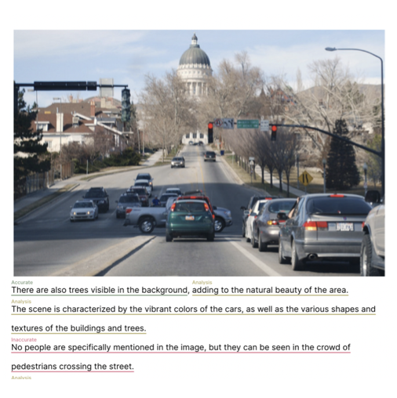
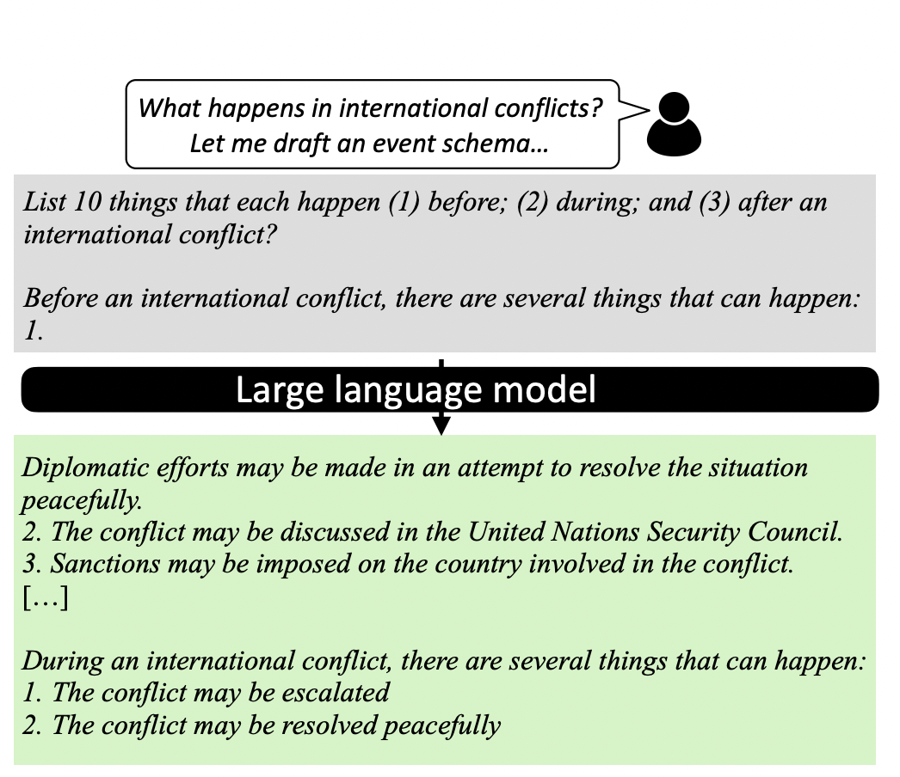
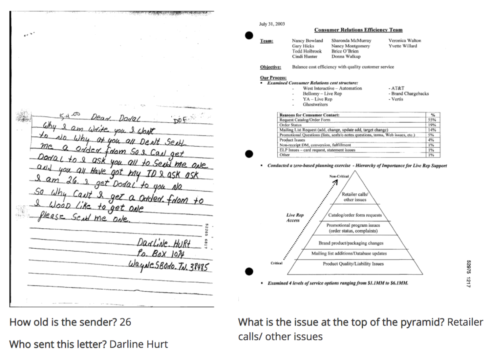
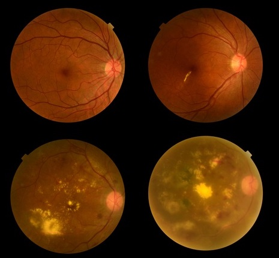

|
Research
My research focus revolves around ensuring that machine-generated text maintains fidelity, accuracy, and a strong connection between visual and language elements. I address these challenges through investigations into fact verification, Reinforcement Learning with human feedback (RLHF), and the effective grounding of text in visual contexts.
|
|

|
Detecting and Preventing Hallucinations in Large Vision Language Models
Anisha Gunjal, Jihan Yin, Erhan Bas
arxiv preprint 2023
paper
Reducing Hallucinations in LVLMs using a novel benchmark dataset M-HalDetect which is used to train fine-grained reward models
capable of detecting unfaithful text generations for a given image context.
|
|

|
Drafting Event Schemas using Language Models
Anisha Gunjal, Greg Durrett
arxiv preprint 2023
paper
Generating and automatically evaluating lightly structures complex event schemas using large language models.
|
|
|
Task-Induced Representation Learning
Jun Yamada,
Karl Pertsch,
Anisha Gunjal,
Joseph Lim
ICLR 2022
project page /
paper
Investigation of using task information for learning representations for RL in visually complex scenes.
|
|

|
Document Visual Question Answering
Anisha Gunjal,
Vipul Gupta,
Moinak Bhattacharya,
Digvijay Singh
CVPR 2020, Leaderboard Rank: 4
code
/
blog
/
workshop
Joint modeling of text and layout information using transformers for Visual Question Answering on unstructured documents.
|
|

|
Diabetic Retinopathy Grading using Deep Siamese Network
Anisha Gunjal
ICML 2018, Poster Presentation
paper
/
workshop
Contrastive Learning on retinal images for determining the stage of Diabetic Retinopathy disease progression on a small sized medical image dataset.
|
Clone this to overcome good website design FOMO!
|
|
{kind=link}